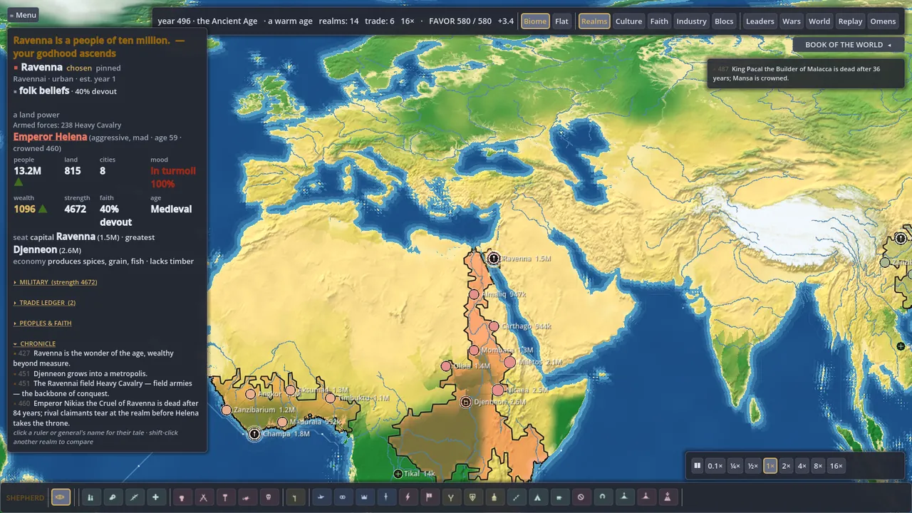
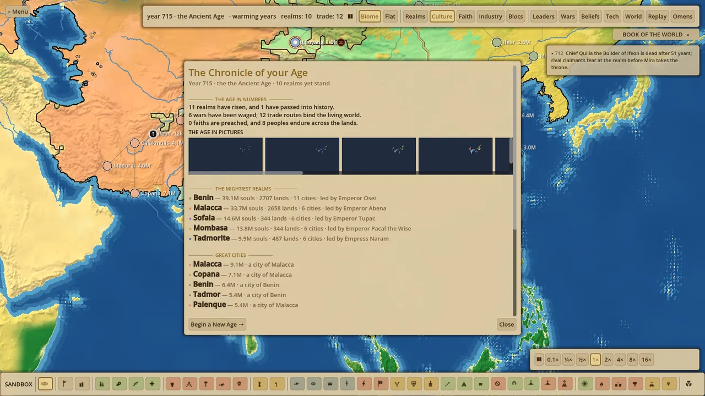
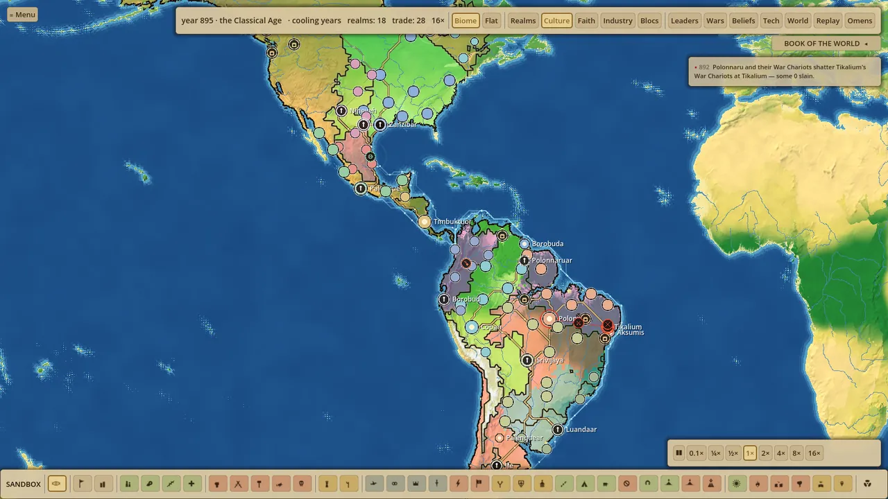

Games / Mulk
World simulation · BrowserMulk
Seed a world with nations, set it running, and let history write itself: borders shift, faiths spread, and empires climb and fall across the ages without a script.

- Type
- Simulation · sandbox
- World
- Real map or generated
- Simulates
- Nations, ages, faiths
- Platform
- Browser
The idea
Preside, don’t play
Mulk hands you a world and lets it live. You do not pick a side. You watch the whole board from above, reach in where you want, and see how the world answers.
Every realm is its own agent — land, people, rulers, faith — pursuing its own ambitions at the same time as every other. What comes out the far end is a history nobody wrote.
The world
A map that fights back
Run history on the real world or on a freshly generated one. Every realm carries a chronicle you can open at any moment to read who rose, who fell, and what it cost them.
Systems
What the world runs on
Nations
Independent powers with their own land, people and ambitions, all pursuing them at once.
The ages
Civilisations move through eras, from settlement to empire, each bringing new powers and new ways to fall.
War
Rivalries turn to war. Fronts move, territory changes hands, and the map is redrawn by force.
Unrest
Populations have a breaking point. Famine, oppression and ambition brew revolt and collapse from within.
Religion
Faiths emerge, spread along trade and conquest, schism, and reshape the nations that carry them.
Culture
Cultures form, blend and divide. Identity outlives borders and drives the next age’s conflicts.
Captures
From the simulation
Select any frame to enlarge. It is best seen in motion, so open it and run a world yourself.


